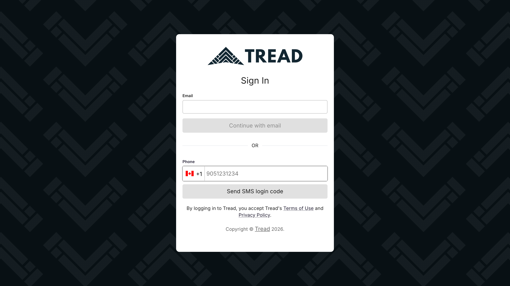
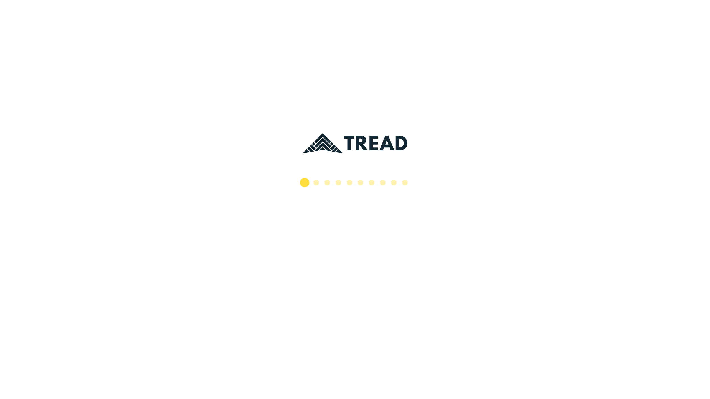

The Horizon entry experience is two surfaces: the sign-in screen, and the
post-login splash shown while the app hydrates. This page documents the current state
of both and proposes four complete redesigns for each — grounded in the UX audit
(Finding #06) and support data. Every proposal follows Tread brand guidelines
(cdn.tread.io wordmarks, yellow/ink palette), surfaces support and
docs.tread.ai, and reserves the bottom-right corner for an agentic assistant.
of Intercom volume is login/verification trouble — yet the sign-in screen offers zero rescue path: no support link, no code-delivery feedback, no fallback.
2×
users wait twice: a full-screen splash blocks everything while identity hydrates (user → company → access → permissions → feature flags), then pages still blank-flash while their own data loads.
#06
UX audit: "hard, blank flash while data loads… raw 'Loading…' text." No skeletons, no transitions, no progress communication anywhere in the journey.
What a user actually experiences (measured on staging)
Sign-in screen→SMS code (13% never arrives)→White void + dots (identity hydration, all UI blocked)→Blank flash (page data, Finding #06)→Dispatch board

CURRENT · SIGN-IN — gray CTAs (read as disabled), stacked email/SMS with an ambiguous OR, no help, no docs, no assistant, no brand yellow.

CURRENT · POST-LOGIN SPLASH — CommonLoader.tsx as captured on staging: a white void with the wordmark and animated dots. No progress, no status, no time estimate, no support link — and when it ends, the board is still not ready.
A
The sign-in screen — 4 proposals
Where locked-out users live. Designs A1–A4 trade brand presence against speed and ticket-deflection power.
A1
Jobsite Hero
A split layout: a dark brand panel sells the product and carries support/docs links; a clean light card handles sign-in with a single yellow CTA. The assistant introduces itself before login.
app.tread.io/sign-in
Every truck. Every ticket. One board.
Dispatch, track, and bill your fleet — built for materials hauling.
By signing in you accept Tread's Terms & Privacy Policy.
Hi! I'm Sam — trouble signing in? I can help.
✦
Benefits
Strongest brand moment — the entry screen finally looks like Tread (yellow-white wordmark, ink panel, proof points).
Support, docs and status live permanently in the brand panel — discoverable before frustration peaks.
Email/SMS becomes a segmented toggle, killing the ambiguous stacked "OR" of the current screen.
Assistant greets users pre-auth — exactly where the 13% of locked-out users need it.
Cons
Heaviest layout — the marketing panel is wasted on daily returning dispatchers.
Stats need real, maintained numbers (stale claims erode trust).
Split layout collapses awkwardly on narrow windows; needs a stacked breakpoint.
Best if: you want the entry screen to double as a marketing/credibility surface for shared logins, demos, and new-customer onboarding.
A2
Utility Minimal
Ruthlessly simple: white screen, black wordmark, one card, one yellow button — plus a persistent utility footer (support · docs · status) and a quiet assistant dock. The fastest path to signed-in.
Fastest perceived load and the least visual noise — respects that most visits are returning users who just want in.
Footer utility bar is a familiar, always-visible home for support + docs + status without competing with the form.
Lowest engineering cost — closest to the current DOM; mostly restyling.
Highest accessibility ceiling: maximum contrast, minimal motion.
Cons
Almost no brand storytelling — a missed moment for demos and first-time users.
Footer links are discoverable but not prominent; locked-out users may still miss them.
"Ask Tread" dock is easy to overlook compared with an animated orb.
Best if: you want a low-risk, ship-this-sprint refresh that fixes the CTA color, the OR confusion, and the missing links — nothing more.
A3
Command Dark
Keeps the current dark chevron identity but executes it properly: a glassy card on the patterned ink background, yellow-white wordmark, a visible "Trouble signing in?" rescue row, live status in the corner, and a pulsing assistant orb.
Continuity — evolves the existing dark-pattern background users already know, rather than replacing it.
The rescue row puts resend/support/docs one tap from the form — directly targets the 13% login-ticket category.
Status line quietly answers "is it me or is it down?" before a ticket is filed.
Dramatic, premium feel; the yellow CTA finally pops against ink.
Cons
Dark form fields are harder to read in bright sunlight — and dispatch yards are bright.
Glassmorphism needs contrast discipline (WCAG on fog-on-ink text).
Backdrop blur costs a little GPU on old yard laptops.
Best if: you want maximum polish with minimum information-architecture change — same single card, dramatically better execution.
A4
Guided Rescue
Designed around the #1 entry-pain: the SMS code that never comes. Shows delivery status after sending, large code boxes, and an always-visible rescue panel — email fallback, live chat, and the assistant trained on sign-in problems.
app.tread.io/sign-in
Enter your code
✓ Code sent to +1 ••• ••• 1234 · delivered 0:08 ago
74
Codes expire after 10 minutes.
Didn't get a code?
↻Resend code — available in 0:21
✉Email me a sign-in link instead
💬Chat with support — 2 min avg. response
Some carriers delay codes. Want a sign-in link by email instead?
✦
Benefits
Attacks the measured problem: 65 of every 500 tickets are "code never arrived" — this screen self-serves most of them.
Delivery status ("delivered 0:08 ago") converts a silent failure into actionable information.
Email-link fallback gives Spanish-language-device and carrier-blocked users an immediate exit ramp.
The assistant has a concrete, high-value first job instead of being decorative.
Cons
Most engineering: needs SMS delivery-status from the provider plus a magic-link auth flow on the backend.
Busier card — the rescue panel adds weight for the majority whose code arrives fine.
Showing delivery telemetry can over-promise; carrier data is sometimes wrong.
Best if: the goal is measurable ticket deflection — this is the only sign-in design that should visibly move the 13% number.
B
The post-login splash — 4 proposals
What replaces the white void. Today, CommonLoader
blocks the entire UI while five identity calls resolve, communicates nothing, and hands off
to a second wait. B1–B4 are ordered by engineering effort: B1 is a component swap,
B4 is an architecture change.
B1
Brand Curtain
The smallest possible change with the biggest perception win: keep the full-screen splash, but make it a branded moment that tells the truth — named hydration steps, a real progress bar, and a support link if it hangs. A drop-in replacement for CommonLoader's internals.
A one-component change — replace CommonLoader's internals, touch nothing else. Shippable in days.
Named steps map to the real hydration sequence (user → company → board), so the wait feels purposeful instead of broken.
"Taking too long?" gives stuck users an exit before they force-refresh or file a ticket.
Finally on-brand: ink + chevron + yellow-white wordmark instead of a white void.
Cons
Still a full-screen blocker — does nothing about the second wait (page data) after it ends.
Step labels must track the real hydration code or they become theater.
Dark splash → light app is a hard luminance jump; needs a fade.
Best if: you want the white void gone this sprint with near-zero architectural risk.
B2
Working Splash
The board's skeleton renders behind a compact branded progress badge, so structure is visible from the first frame. Wait time becomes education: rotating tips deep-link into docs.tread.ai. Closes audit Finding #06 for the landing screen.
app.tread.io/dispatch · loading
Loading your dispatch board… orders · drivers · sites
Structure appears instantly — no blank flash, no raw "Loading…" (Finding #06, closed).
Skeleton mirrors the real board, so perceived load time drops even when actual time doesn't.
Wait time becomes education: rotating tips link straight into docs.tread.ai (the 21.6% how-to gap).
One unified treatment can serve both waits — hydration and page data.
Cons
Skeleton must track real layout or it makes the flash worse (mismatch jank).
Tips during loading can irritate power users; needs a "seen recently" rotation and a fast-path when load < 1s.
More surface to maintain per page type (dispatch vs approvals vs settings skeletons).
Best if: you want one loading language for the whole app — splash and in-app loads — and are willing to maintain per-screen skeletons.
B3
Daily Briefing
The splash earns its screen time: while the board hydrates, a briefing card shows the dispatcher's day — orders, trucks, unassigned jobs — fed by one lightweight summary endpoint that returns before full hydration. The agent opens with the most actionable fact.
app.tread.io · good morning
Good morning, Dana
THU JUN 11 · GRANITE PEAK AGGREGATES
12orders today
38jobs scheduled
5still unassigned
6:30afirst start
Preparing your board…
5 jobs are unassigned for today. Want me to draft assignments while the board loads?
✦
Benefits
The wait produces value: dispatchers see their day before the board finishes loading.
The "unassigned" number is the dispatcher's #1 morning question — answered in second one.
Gives the agent its strongest possible entrance: a concrete, proactive offer tied to real data.
Briefing card is reusable as a daily-summary email/notification later.
Cons
Needs a new fast summary endpoint that resolves before full hydration — backend work.
Numbers must be trustworthy at a glance; an early-but-wrong count is worse than none.
Role-dependent: a biller or foreman needs a different briefing than a dispatcher.
Best if: you want the splash to become a feature — and a launchpad for the agent — rather than a delay to minimize.
B4
Instant Shell
No full-screen splash at all. The app chrome — header, nav, identity — renders instantly from cached session data; each content region streams in under a thin yellow progress bar with its own skeleton. The double-wait collapses into one progressive load.
app.tread.io/dispatch · streaming
ProjectsDispatchApprovalsLive MapSettings
Dana MercerDM
✓ Drivers loaded — 24 available
Loading orders… 2 of 4 sections ready
✦
Benefits
Kills the double-wait: one progressive load instead of splash-then-flash. The fastest the app can possibly feel.
Users can orient, open menus, and even navigate while data streams — no blocked seconds at all.
Per-region status ("2 of 4 sections ready") makes slowness legible and debuggable.
This is the industry-standard endgame (Linear, Slack, Notion all boot this way).
Stale cache risks flashing the wrong company/permissions for a beat — needs careful invalidation.
Interactive-but-incomplete states need guardrails (e.g., actions disabled until their data lands).
Best if: you're ready to invest in the destination architecture — this is the end state the other three approximate.
Recommendation
Sign-in track: ship A2 (Utility Minimal) now — days of work, fixes the gray CTAs, the OR confusion, and the missing support/docs links. Build A4 (Guided Rescue) next; it's the only design that attacks the measured 13% login-ticket volume. Fold in A3's rescue-row and A1's brand panel as patterns.
Splash track: ship B1 (Brand Curtain) in the same sprint — it's a CommonLoader component swap that ends the white void immediately. Adopt B2 (Working Splash) skeletons as the standard loading language (closing Finding #06 app-wide), and treat B4 (Instant Shell) as the quarter-scale destination. B3 (Daily Briefing) is the agent's best entrance — schedule it with the agentic assistant launch so the orb shows up with something to say.